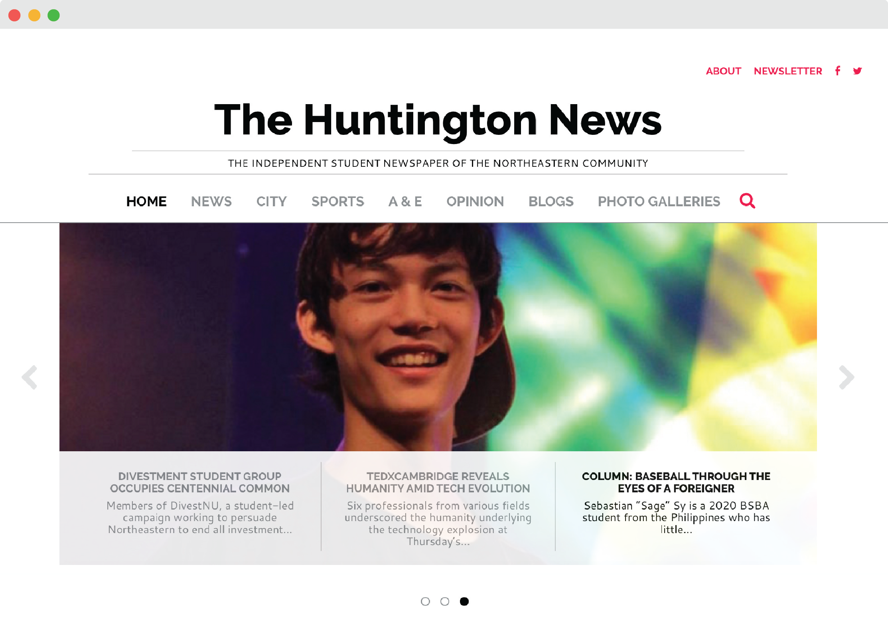
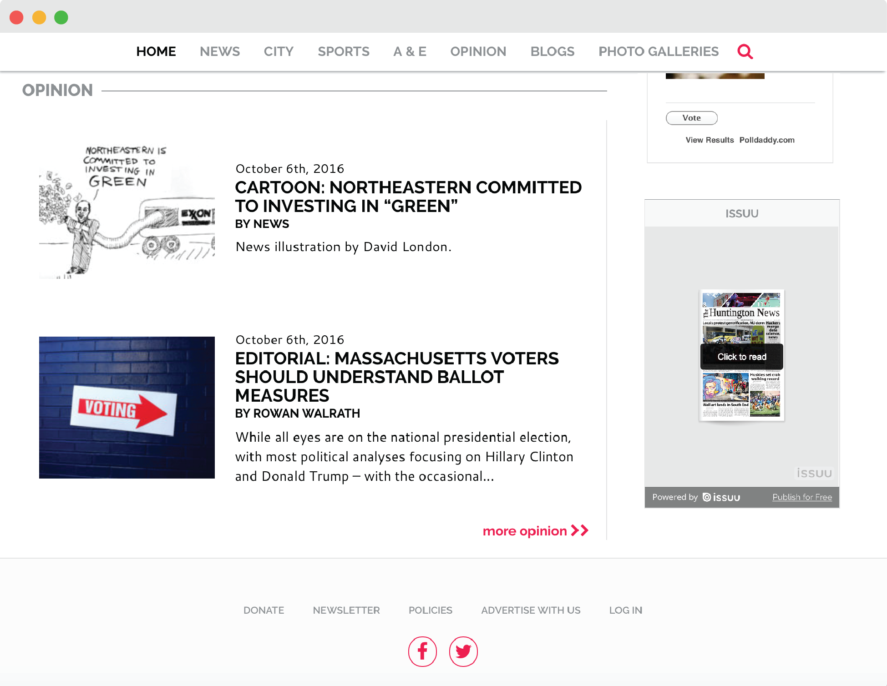

This past summer, Emily Boyle and I completely redesigned Northeastern's independent student newspaper, Huntington News. Through our research process, we discovered that, in our opinion, online newspapers fell into two categories: sites that looked exactly like a physical newspaper, and sites that followed a blog format. The later, was often overwhelming and hard to read but the blog style also lost all resemblance to its physical counterpart. For Huntington News, we strived to create a site that was a hybrid of the two, combining the eligibility of a blog while maintaining the traditional feel of a physical newspaper.
